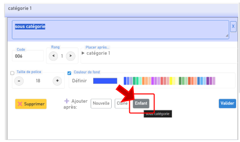
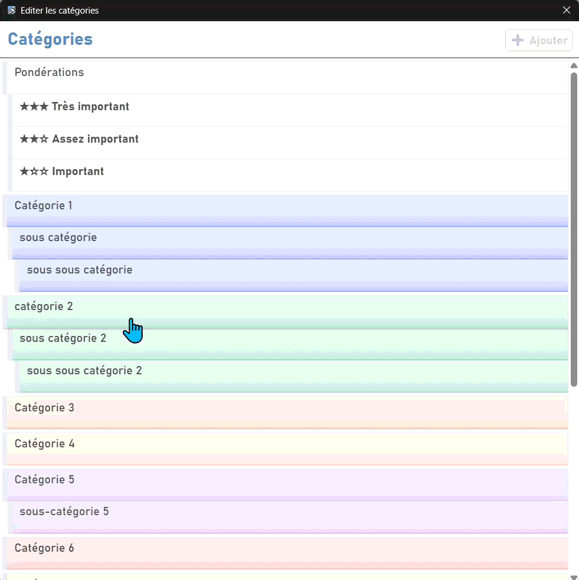
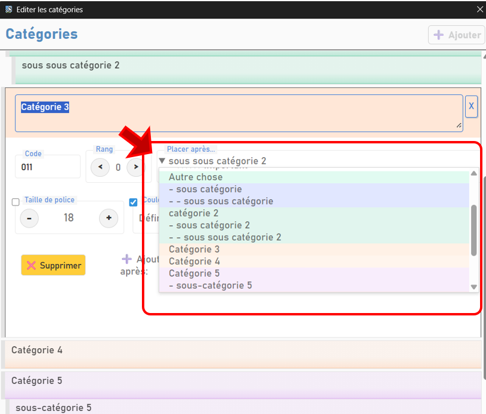

5 - Créer des catégories thématiques de codage
L'un des intérêts de Sonal est de vous permettre de coder vos retranscriptions tout en les corrigeant.
Sonal vous propose de modifier le format (taille de police, couleur de fond) de passages du texte afin 1/ de repérer visuellement les différentes parties des entretiens dans la représentation synthétique horizontale, 2/ de filtrer ultérieurement les données pour retrouver très simplement tous les passages marqués par un même code.
C'est en quelque sorte comme si vous disposiez d'une trousse de surligneurs de différentes couleurs pour mettre en relief des passages des transcriptions.
Les différents formatages disponibles sont appelés « catégories ». L'usage le plus intuitif est d'associer des couleurs aux différents thèmes abordés dans les entretiens - on parle alors de « catégories thématiques » -, mais au-delà de décrire ce qui est dit, les catégories peuvent être utilisées pour caractériser n'importe quelle dimension du discours ou de l'interaction. Elles peuvent aussi servir à mettre en relief les passages auxquels vous apportez de l'intérêt.
Bon à savoir : De la pondération aux catégories d'importance
Dans les versions ultérieures de Sonal, il existait un système nommé « pondération », représenté par des étoiles, permettant au chercheur de marquer des passages jugés importants, instructifs, dignes d'être cités etc. Dans Sonal π, les pondérations sont remplacées par des catégories fonctionnant sur le même modèle que les catégories thématiques.
Par défaut, Sonal propose quatre catégories. Une catégorie globale nommée « Pondération » suivie de trois sous-catégories distinguant les passages importants, assez importants et très importants. Les marqueurs de catégories de pondération permettent de mettre en gras et d'agrandir la police des passages qui vous semblent particulièrement intéressants, révélateurs ou dignes d'être relus.
Mais vous pouvez aussi créer vos propres catégories contenant notamment des couleurs qui vont vous permettre de distinguer les différents passages du texte sur la base de votre grille d'analyse.
Pour créer ces marqueurs de couleurs, allez dans le panneau « Catégories » et cliquez sur le bouton ✏️ en haut à droite.

Vous pouvez ensuite ajouter des catégories, choisir un nom et leur couleur.
5.1.1 Options des catégories
5.1.1.1 Code
Les catégories ont un identifiant unique basé sur un nombre à trois chiffres. Sonal attribue seul et gère seul ces numéros de catégorie. Il n'est pas utile ni souhaitable de les modifier.
5.1.1.2 Libellé
Le libellé des catégories est composé d'un texte libre. Il n'y a pas de limite de taille, mais dans la pratique, il vaut mieux un texte relativement court.
Bon à savoir : Astuce
Vous pouvez mettre un intitulé relativement court, puis après //, des commentaires, des explications ou des intitulés beaucoup plus longues qui n'apparaîtront pas immédiatement dans le panneau des catégories mais seulement au survol de la souris.
5.1.1.3 Rang
Les catégories peuvent être réunies par familles.
Sonal gère une arborescence jusqu'à six niveaux, désignées par des rangs.
- Rang 0
- -> Rang 1
- -> -> Rang 2
L'organisation des catégories est basée sur leur rang et leur position. Toutes les catégories qui suivent une catégorie de rang inférieur sont considérées comme y étant affiliées, jusqu'à ce qu'une nouvelle catégorie de rangs équivalents apparaisse dans la liste. Par exemple: si une catégorie a le rang 0 (le premier niveau) et qu'elle est suivie d'autres catégories de rangs 1, 2 ou 3, le logiciel considère que ces catégories sont affiliées à la première catégorie jusqu'à ce qu'une nouvelle catégorie de rang 0 apparaisse.
Vous pouvez définir manuellement le rang des catégories ou utiliser la fonction « ajouter après → enfant » pour directement créer une catégorie subordonnée à celle que vous êtes en train d'éditer.
5.1.1.4 Couleur
Il est possible d'associer une couleur à une catégorie, mais ce n'est pas obligatoire. Une série de couleurs par défaut sont proposées, mais vous pouvez, en cliquant sur la zone à gauche, créer votre propre couleur personnalisée pour une catégorie.
5.1.1.5 Taille de police
Les catégories peuvent avoir des tailles de police différentes. C'est notamment le cas des catégories de pondération qui n'ont pas de couleur spécifique mais une taille de police plus élevée que la police d'affichage par défaut.
5.1.2 Créer des clones, des enfants etc.
Depuis la fenêtre de création d'une catégorie, vous avez la possibilité de créer directement une copie conforme de la catégorie que vous venez d'éditer (clone) ou de lui créer un enfant, c'est-à-dire une catégorie similaire, mais d'un rang supérieur.

5.1.3 Modifier une catégorie
Pour modifier une catégorie, cliquez sur son intitulé pour la rééditer. Vous pourrez modifier son libellé, sa couleur, la taille de police etc.

5.1.4 Déplacer une catégorie
Dans la fenêtre d'édition de la catégorie, utilisez le menu déroulant pour définir la nouvelle position de la catégorie.
